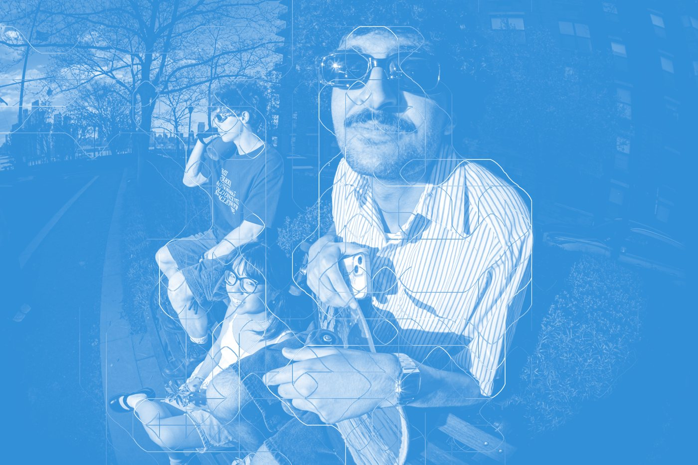

Design
Photoshop work from 2022 to 2026, in two parts: the finished pieces, from BSU flyers to the experiments he made for himself, and the studies and artifacts he built them from.

Finished work · the standout
i tried to do something
Photoshop, 2024. Begun April 15, 2024, the day of the FAME picnic, on one of the fisheye frames from that afternoon, and finished that September after five saves.
Folder: certified time waster
Note from the artistOne of the coolest things I’ve ever done.
Studies & artifacts
The parts, not the finished pieces: backgrounds like D-274, textures and tests where he was playing around. The techniques turn up in other work.